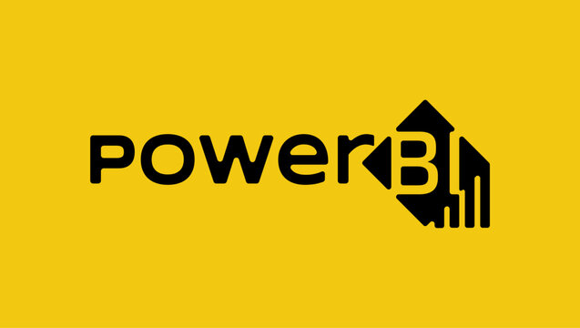

Nesse projeto, ocorre a demonstração do processo completo de transformação de dados brutos (raw data) em uma base analítica de alta qualidade. Um dataset global de layoffs foi utilizado para aplicação de técnicas avançadas de limpeza, garantindo a integridade e a consistência das informações para tomadas de decisão.
Nesse projeto, foi realizada a identificação de padrões de demissões e tendências temporais em um dataset global de layoffs utilizando SQL avançado para transformar dados brutos em insights estratégicos sobre os setores mais atingidos.

Nesse projeto, foi utilizada uma pesquisa com 630 profissionais da área de dados para mapear seus perfis e opiniões. O foco é a transformação dos dados brutos em um dashboard explicativo.

Nesse projeto, o objetivo principal foi identificar e medir quais variáveis (como orçamento, votos do público e pontuação) possuem maior impacto no sucesso financeiro (faturamento bruto) dos filmes.

Nesse projeto, Python foi utilizado para automatizar a coleta e a estruturação de indicadores das 15 principais criptomoedas via API.